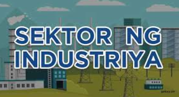

Lesson 3 - Industriya
- INDUSTRIYA
- -Tumutukoy sa pagproseso ng mga hilaw na materyal at paggawa ng mga produkto na kinakailangan para sa pampublikong pamilihan
- -Naglalayong maiproseso ang mga hilaw na materyal upang makabuo ng produkto na ginagamit ng tao
- SUB SEKTOR NG INDUSTRIYA:
- 1.Pagmimina (Mining)
- 2.Pagmamanupaktura (Manufacturing)
- 3.Konstruksyon (Construction)
- 4.Utilities
- Pagmimina
- -Pagkuha at pagproseso ng mga yamang mineral (metal, di-metal, o enerhiya) upang gawing tapos na produkto o kabahagi ng isang yaring kalakal
- -Ang mismong produkto, hilaw man o naproseso ay nagbibigay ng kita para sa bansa
- Pagmamanupaktura
- -Paggawa ng mga produkto sa pamamagitan ng manual labor o ng mga makina
- -Nagkakaroon ng pisikal o kemikal na transpormasyon ang mga materyal o bahagi nito sa pagbuo ng mga bagong produkto
- Konstruksyon
- -Pagtatayo ng mga gusali, estruktura, at iba pang land improvements
- Utilities
- -Pagtugon ng mga pangunahing pangangailangan ng mga mamamayan tulad ng tubig, kuryente, at gas
- -Paglalatag ng mga imprastraktura at angkop na teknolohiya upang maihatid ang serbisyo

- KAHALAGAHAN SA PAMBANSANG KAUNLARAN:
- -Tumatanggap ng mga produkto mula sa sektor ng agrikultura at ng serbisyo mula sa sektor ng paglilingkod
- -Nagkakaloob ng hanapbuhay sa maraming Pilipino
- -Nagpapasok ng dolyar sa bansa
- -Nakagagamit ng makabagong Teknolohiya
- -Gumagawa ng mga intermediate products (mga materyales o produkto na ginagamit sa paggawa ng iba pang produkto; hal. wheat - to make bread)
.jpg)
- PAGKAKAUGNAY NG AGRIKULTURA AT INDUSTRIYA:
- -Nagmumula sa agrikultura ang mga hilaw na sangkap na ginagamit sa pagbuo ng mga produkto ng industriya.
- -Ang mga ginagamit na traktora, sasakyang pangingisda, at iba pang produkto ay mula sa industriya na ginagamit ng mga magsasaka upang magkaroon ng mataas na produksyon na magbibigay ng malaking kita sa sektor ng agrikultura.
- -Ang dami ng lakas-paggawa sa mga mamimili ay nagpapakita ng lubos na pagtutulungan sa mga sector ng industriya at agrikultura.
- -Ang agrikultura ang pinagmumulan ng pagkain ng mga industriya na siyang tumutugon sa mga pagkaing kinakailangan ng mga tao.
- -Ang industriya ang nagbibigay ng malaking kontribusyon sa ekonomiya
- -Ang mga sangkap ay nagkakaroon ng transpormasyon dahil sa mga lakas–paggawa na gumagawa upang madagdagan ang halaga nito at lalo pang gumanda.
MGA PATAKARANG PANG-EKONOMIYA:
- Filipino First Policy:
- -Nagsimula sa programang FIlipino Muna ni Pangulong Carlos P. Garcia
- -Naglalayong bigyan ng higit na malaking partisipasyon ang mga Pilipino sa pagpapatakbo ng ekonomiya
- Oil Deregulation Law (R.A. 8479):
- -Nagbukas ng kompetisyon sa industriya ng langis
- -Ang pamilihan ang nagdidikta sa presyo ng petrolyo, at hindi ito maaaring pakialaman ng gobyerno
- Patakaran ng Microfinancing:
- -Serbisyong pinansiyal na isinasagawa ng mga bangko na magpautang na mayroong mababang interes sa mahihirap na pamilya
- Patakaran sa Online Business:
- -Online shopping o retailing
- -Online intermediary service
- -Online advertisement o classified ads
- -Online auction
- Retail Nationalization Act of 1964 (R.A. 1180):
- -Sampung taong palugit sa mga dayuhang capitalist
- -Pilipino na may korporasyon o asosasyon lamang ang nasa kalakalang pagtitingi
- Retail Trade Liberalization Act of 2000 (R.A. 8762)
- -Nagpawalang-bisa sa RA 1180
- -Binuksan ang kalakalang pagtitingi sa mga dayuhan
- Build-Operate-Transfer (BOT) (R.A. 6957)
- -Binibigyan ng karapatang bumuo ng mga pasilidad sa kanilang mga sariling pondo at palakarin ito sa humigit-kumulang na 25 taon
- Asset Privatization Trust (APT)
- -Itinatag upang mapangasiwaan ang pagbebenta ng mga korporasyong pagmamay-ari ng pamahalaan sa pribadong pagmamay-ari.
- -Pinasimula ni Corazon Aquino
- INDUSTRIYALISASYON:
- - Kalagayan ng ekonomiya na nagpapakita ng kapasidad at kakayahan ng bansa na makalikha ng maraming produkto mula sa hilaw na materyal ng agrikultura na tutugunan sa pangangailangan ng lokal na pamilihan at pamilihan sa labas ng bansa.
- LAYUNIN:
- 1. Malinang at mapaunlad ang pinagkukunang yaman ng bansa (Likas na yaman, yamang tao, at yamang kapital)
- 2. Magbigay pagkakataon na maitaas ang antas ng kabuhayan ng mga mamamayan.
- 3. Makatulong sa pagpapaunlad ng ekonomiya.
- KAHALAGAHAN:
- - Daan para mapaunlad ang bansa
- - Pagbabagong teknolohikal na sinasabayan ng mga pagbabagong pangkultura, panlipunan, at pansikolohikal.
- - Mas magaan ang gawain ng mga manggagawa.
- URI:
- 1. COTTAGE INDUSTRY
- 2. SMALL AND MEDIUM SCALE INDUSTRY
- 3. LARGE SCALE INDUSTRY
- EPEKTO:
- - Mapataas ang produksyon ng sektor ng ekonomiyadd>
- - Hindi pagkakapantay ng kalagayang pang ekonomiko
- - Paglaki ng polusyon
- - Pagbaba ng pagkakaisa sa komunidad dahil sa kompetisyon
SANGAY NG PAMAHALAAN NA TUMUTULONG SA SEKTOR NG INDUSTRIYA
- -Department of Trade and Industry (DTI): Tuwirang tumitingin at nangangalaga sa larangan ng industriya at pangangalakal.
- -Board of Investments (BOI): Tinutulungan ang mga nagsisimulang industriya at humihikayat sa mga dayuhang mamumuhunan na magnegosyo sa bansa.
- -Philippine Economic Zone Authority (PEZA): Tumutulong sa mga namumuhunan na maghanap ng lugar upang pagtayuan ng negosyo.
- -Securities and Exchange Commission (SEC): Nagtatala at nagrerehistro sa mga kompanya sa bansa.
< back to the AP home page